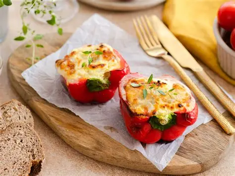
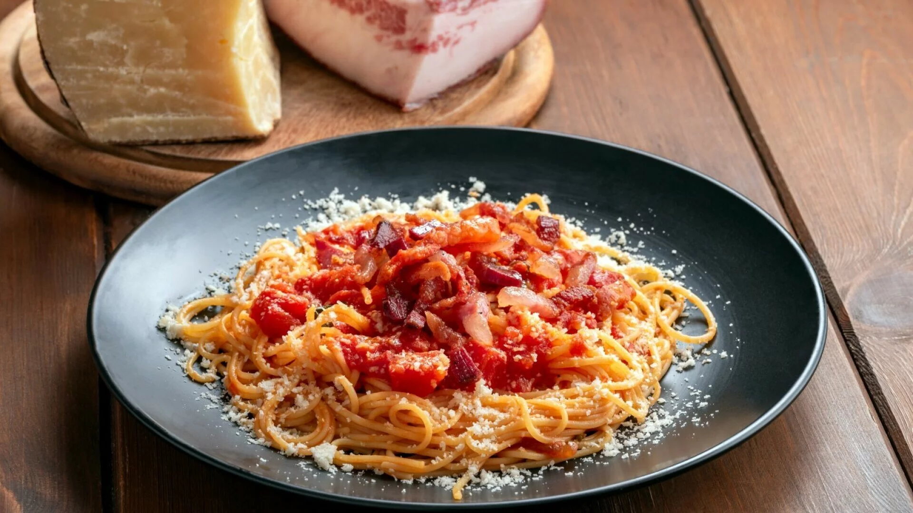
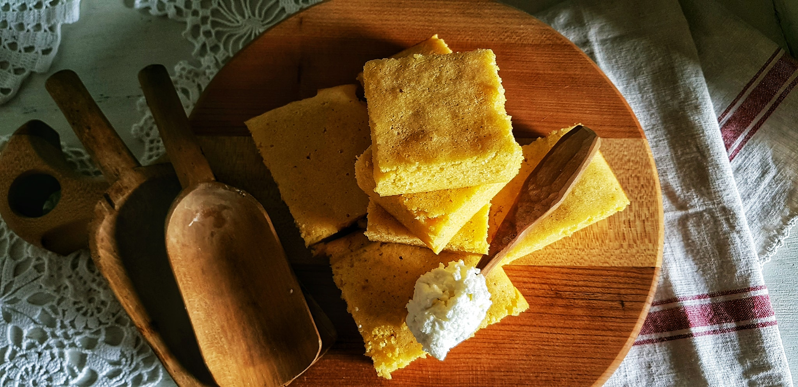

Punjena paprika sa sirom
Špageti
Desert
Punjena paprika sa sirom

Potrebni sastojci
- 500 g Belje Kravica kraljica Svježeg sira s vrhnjem
- 100g gorgonzole
- 4 crvene paprike
- 1 jaje
- 1 žlica vegete
- 2 žlice maslinovog ulja
- sol
Upute za pripremu:
- Cijele paprike prokuhajte oko 5 minuta u blago posoljenoj vodi te odmah ohladite hladnom vodom. Prerežite ih po duljini, očistite od sjemenki i žilica.
- Električnom miješalicom dobro izmiješajte svježi kravlji sir s jajetom, gorgonzolom narezanom na sitne kockice i Vegetom.
- Rasporedite sir u polovice paprika i stavite u nauljenu vatrostalnu posudu.
- Pecite u pećnici zagrijanoj na 200°C oko 20 minuta.
Špageti

Potrebni sastojci
- 350 g Zlato polje Bucatini
- 500 g svježih rajčica
- 150 g mozzarelle
- 50 ml maslinovog ulja
- 2 žlice vegete
Upute za pripremu:
- Rajčice ogulite, očistite od sjemenki, narežite na kockice i kratko propirjajte na ugrijanom ulju. Dodajte Vegetu Twist mediterana i sve još kratko propirjajte.
- Špagete skuhajte i istresite u toplu zdjelu. Toplim špagetima dodajte mozzarellu narezanu na kockice, prelijte ih umakom od rajčica, sve dobro promiješajte i odmah poslužite.
Desert

Potrebni sastojci
- 1 litra mlijeka
- 4 jaja
- 120 g šećera
- limunova korica
- sol
- 300 g kukuruznog brašna
- 5 žlica ulja
Za premazivanje:
- 200 ml kiselog vrhnja
- 150 g Džema miješanog voća
Upute za pripremu:
- U mlijeku razmutite jaja, ulje, šećer, naribanu limunovu koricu, malo soli i kukuruzno brašno.
- Izlijte pripremljenu smjesu u lim koji ste prethodno premazali uljem i dobro ga zagrijali u pećnici. Pecite u zagrijanoj pećnici na 200°C oko 30 minuta.
- Pečenu bazlamaču zalijte vrhnjem i zapecite još 20 minuta.